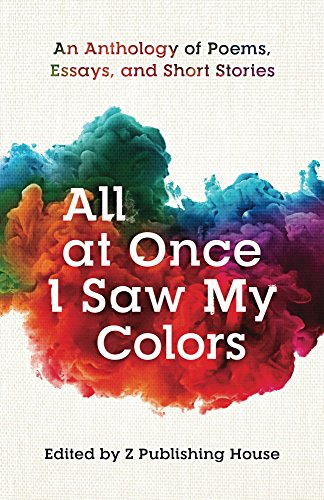
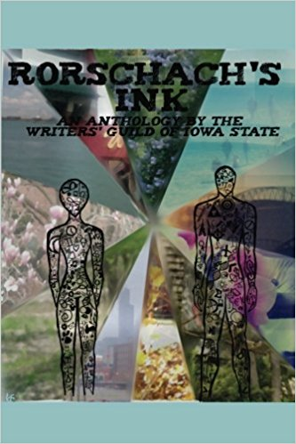

About Valery
An Electrical Enginering student at Iowa State University in Ames, IA
Bachelor of Science, Electrical Enginering
GPA: 3.2 Expected Graduation: May 2020
Work Experince
I am currently a teaching assistant for EE 285 C programming and problem solving.
Last summer I had the pleasure of an automation internship with AES in Cedar Rapids. This has given me experince
working with Programable logic controlers and Human Machine Interface. Previously, I have tutored calculus and taught swim lessons for both the City of Idaho Falls and Ames.
I continue my love of teaching by frequently volunteering in local STEM outreach programs including Cedar Rapids's Coder Dojo.
Clubs and Activities
I curently hold the position of President in the Critical Tinkers club at Iowa State. The club has an emphasis on critical thinking, as well as
provides members with access to resources and other team members for pursuing personal projects.
I am the former secretary of the Writers's Guild at Iowa State. As the secretary I was responsible for sending the weekly
club email, asiting in planing club meetings, planning events and asisted in pbulishing the guild anthology. I have been published in the
2016 edition of the guild's anthology as well as the 2017 edition.
I am a member of the Cyclone Swing Society and regularly attend swing dancing lessons and dances.
Within the Cyclone Hockey Pep-band I play flute and use what breath I have left to cheer on the team.
Free Time and Non-Engineering Projects
In additon to being published in the Writers's Guild of Iowa State's anthologies, I am also published in several of Z publishing house's anthologies.
I have a short story in All at Once I Saw my colors. 
As well as sever short stories and poems in Dream of a World Waking Up
Recently I have done the cover design and part of the publishing for The 2017
edition of the Writer's Guild at ISU anthology. 